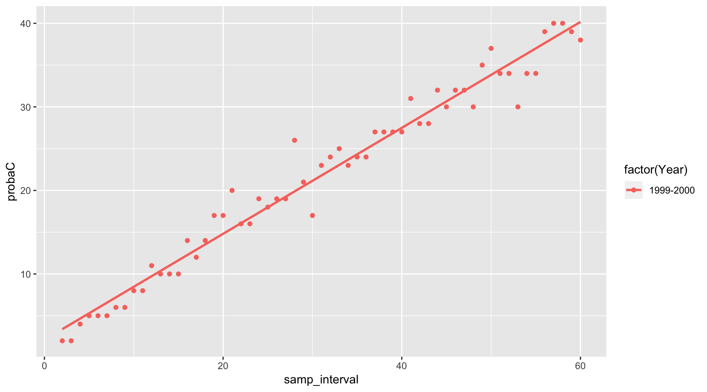
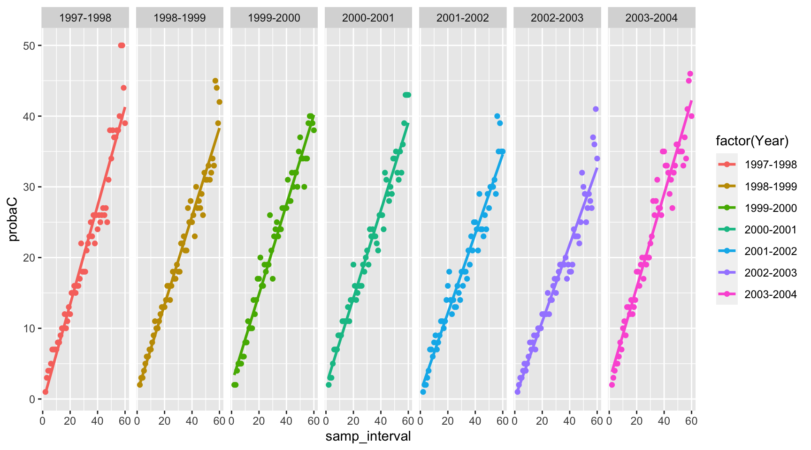

started 2017-11-23 and updated 2020-03-12
I must say that I have only recently started working with tools such as tidyr or tidyverse, which are really making a revolution in the way one uses R to analyze data. Like all my students until now, I have learned, and I am still learning, R almost all by myself, with no formal training. The good news is that students in our department are about to have this oppotunity thanks to Dr Natalie Nelson who just joined us.
The reason for this post is that I have been trying to switch from the old graphics packages to ggplot. But to get there, it is very important to prepare data in proper format. The current R jargon for this is to make the data tidy. So I bought the book “R for data science” and I thought this was going to vastly help me. I do not know whether it is the kindle version that I have, but I have not found it easy to work with and I am not sure I have learned a lot from it…
In particular, I wanted to make my data tidy so that I could start using ggplot for some of my analyses. I could tell that much of the trick was in the ability to use the gather() and the spread() features of the tidyr package. I have spent countless hours trying to decipher and reproduce the examples in the book, or on tutorials on the web, but I just could find things that would work for me.
I slowly realized that all the examples given always use either gather or spread, but using both together is not something well reported, or at least I missed that. I will thus report how I managed to solve my problems here.
I have worked for quite a few years on calculating uncertainties on nutrient loads at the catchment scale1–8, but there are many angles one can approach this problem. Recently, I have decided to illustrate minimum water quality improvement reauired for us to be confident that they are real, and that as a function of the sampling frequency.
For that, I have written routines that take reference flow and concentration data collected hourly. To simulate water quality (WQ) improvements, I multiply concentrations by 0.99, for a 1% WQ improvement, 0.98 for a 2% WQ improvement, etc. I then degrade the original and the WQ–improved data to simulate common sampling frequency, such as monthly sampling, and compare whether the concentrations from the original and the WQ–improved data are significantly different. I do that for water quality improvements from 1 to 60%, and I look for, for example monthly sampling, the minimum level of WQ improvement required for which I can confidently say (95% confident) that the original and the WQ–improved data are different.
The dataset is available here. The way I have stored the simulations include:
Wshd: the name of the watershed (here the watershed of the Maudouve river at Saint-Donan in Brittany, France),elmt: the name of the element for the analysis, here nitrate,type: the type of data represented in rows:
samp_interval: the values of the sampling intervals chosen in daysprobaC: the percentage of needed concentration improvement to be detected corresponding to each sampling intervalprobaL: the percentage of needed load improvement to be detected corresponding to each sampling intervalYear: the hydrological year from which the analyses were doneX02d to X60d: the sampling intervals from 2 to 60 days detect<-read.csv("https://raw.githubusercontent.com/francoisbirgand/francoisbirgand.github.io/master/probadetectblog.csv", header = TRUE)
detect_df<-as.data.frame(detect)
head(detect_df)## Wshd elmt type Year X02d X03d X04d X05d X06d X07d X08d
## 1 Maudouve NO3 samp_interval 1997-1998 2 3 4 5 6 7 8
## 2 Maudouve NO3 probaC 1997-1998 1 3 4 4 5 7 7
## 3 Maudouve NO3 probaL 1997-1998 2 4 5 6 5 10 11
## 4 Maudouve NO3 samp_interval 1998-1999 2 3 4 5 6 7 8
## 5 Maudouve NO3 probaC 1998-1999 2 3 3 4 5 6 6
## 6 Maudouve NO3 probaL 1998-1999 1 2 5 5 4 7 7
## X09d X10d X11d X12d X13d X14d X15d X16d X17d X18d X19d X20d X21d X22d
## 1 9 10 11 12 13 14 15 16 17 18 19 20 21 22
## 2 7 7 8 8 9 10 10 12 10 11 13 12 15 15
## 3 10 10 11 9 9 14 12 14 12 12 12 15 18 17
## 4 9 10 11 12 13 14 15 16 17 18 19 20 21 22
## 5 7 7 8 9 11 10 10 11 12 13 13 13 14 16
## 6 9 7 11 10 11 10 9 10 10 12 12 11 10 14
## X23d X24d X25d X26d X27d X28d X29d X30d X31d X32d X33d X34d X35d X36d
## 1 23 24 25 26 27 28 29 30 31 32 33 34 35 36
## 2 16 15 16 16 17 22 18 18 18 21 22 23 25 23
## 3 16 16 16 14 17 21 15 17 16 17 20 22 24 20
## 4 23 24 25 26 27 28 29 30 31 32 33 34 35 36
## 5 16 14 16 18 17 17 19 18 18 22 22 23 21 21
## 6 15 15 14 16 16 13 18 15 14 16 15 16 13 17
## X37d X38d X39d X40d X41d X42d X43d X44d X45d X46d X47d X48d X49d X50d
## 1 37 38 39 40 41 42 43 44 45 46 47 48 49 50
## 2 26 22 26 24 26 25 26 27 26 27 25 31 38 34
## 3 23 21 19 20 22 23 20 19 23 22 21 27 32 29
## 4 37 38 39 40 41 42 43 44 45 46 47 48 49 50
## 5 27 25 28 25 26 23 30 27 28 27 29 26 32 31
## 6 19 22 20 16 16 17 18 22 20 18 17 21 16 19
## X51d X52d X53d X54d X55d X56d X57d X58d X59d X60d
## 1 51 52 53 54 55 56 57 58 59 60
## 2 38 37 37 38 38 40 50 50 44 39
## 3 33 30 31 31 29 28 33 30 34 29
## 4 51 52 53 54 55 56 57 58 59 60
## 5 31 33 31 32 34 33 45 44 39 42
## 6 23 21 19 15 19 22 21 26 24 19ggplotgather()My goal is to be able to plot the minimum WQ improvement required as a function of sampling intervals for all the years available, and see the type of relationship that may exist between the two. In the version of the detect dataframe, the data are in rows, but for ggplot, I need to put them into columns. The first step is to use the gather function. The part that was extremely unclear to me was the syntax for the gather function. In particular, I could not find that one might want to create new variable names.
I want to put all the columns X02d to X60d as row-variables, so they need to be in lines now. First, I need to create a new column-variable, in which all the sampling interval names X02d to X60d will be stored. I have called it Interval. Second, I need to store all the values corresponding to all sampling intervals into another column-variable, and I need to provide a name for it. I have chosen value.
detect_df<-as.data.frame(detect)
detect_df<- detect_df %>%
gather(Interval,value,5:63)
head(detect_df)## Wshd elmt type Year Interval value
## 1 Maudouve NO3 samp_interval 1997-1998 X02d 2
## 2 Maudouve NO3 probaC 1997-1998 X02d 1
## 3 Maudouve NO3 probaL 1997-1998 X02d 2
## 4 Maudouve NO3 samp_interval 1998-1999 X02d 2
## 5 Maudouve NO3 probaC 1998-1999 X02d 2
## 6 Maudouve NO3 probaL 1998-1999 X02d 1This is where most posts stop when I “googled” gather() and tidyr, but clearly the data is just not in a usable form, yet. The good news is that the 59 columns are now spread into rows, but I still cannot plot probaC as a function of samp_interval. This is where It finally dawned on me that I could spread the data stored in rows in the column type, and make them become columns. This is where the spread() functions comes in.
In that function, you define origin column you want to spread into several column-variables, which names will become the unique items from the origin column. In my case here, I want the three unique values in type to become columns, and I want that the correponding values (stored into the column value, I know it is not the best name), be assigned to these new columns. The code to do this is below.
tidy_df<-detect_df %>%
spread(type,value)
head(tidy_df)## Wshd elmt Year Interval probaC probaL samp_interval
## 1 Maudouve NO3 1997-1998 X02d 1 2 2
## 2 Maudouve NO3 1997-1998 X03d 3 4 3
## 3 Maudouve NO3 1997-1998 X04d 4 5 4
## 4 Maudouve NO3 1997-1998 X05d 4 6 5
## 5 Maudouve NO3 1997-1998 X06d 5 5 6
## 6 Maudouve NO3 1997-1998 X07d 7 10 7So now, I have columns for the sampling intervals (samp_interval) and the simulated values stored in probaC and probaL. The power of ggplot can now be used to plot the relationship between the minimum concentration difference required to be detected, per year.
p <- ggplot(tidy_df) +
aes(x=samp_interval,y=probaC,color=factor(Year)) +
geom_point(data = tidy_df[tidy_df$Year == "1999-2000",]) +
geom_smooth(data = tidy_df[tidy_df$Year == "1999-2000",],method = "lm", se = FALSE)
print(p)
p <- ggplot(tidy_df) +
aes(x=samp_interval,y=probaC,color=factor(Year)) +
geom_point() +
geom_smooth(method = "lm", se = FALSE) +
facet_grid(~Year)
print(p)
1. Moatar, F., Meybeck, M., Raymond, S., Birgand, F. & Curie, F. River flux uncertainties predicted by hydrological variability and riverine material behaviour. Hydrol. Process. 27, 3535–3546 (2013).
2. Birgand, F., Lellouche, G. & Appelboom, T. W. Measuring flow in non-ideal conditions for short-term projects: Uncertainties associated with the use of stage-discharge rating curves. J. Hydrol. 503, 186–195 (2013).
3. Birgand, F., Appelboom, T. W., Chescheir, G. M. & Skaggs, R. W. Estimating nitrogen, phosphorus, and carbon fluxes in forested and mixed-used watersheds of the lower coastal plain of north carolina: Uncertainties associated with infrequent sampling. Trans. ASABE 54, 2099–2110 (2011).
4. Birgand, F., Faucheux, C., Gruau, G., Moatar, F. & Meybeck, M. Uncertainties in assessing annual nitrate loads and concentration indicators: Part 2. Deriving sampling frequency charts in brittany, france. Trans. ASABE 54, 93–104 (2011).
5. Birgand, F. et al. Uncertainties in assessing annual nitrate loads and concentration indicators: Part 1. Impact of sampling frequency and load estimation algorithms. Trans. ASABE 53, 437–446 (2010).
6. Birgand, F. et al. Une approche quantitative du rôle de la fréquence d’échantillonnage sur les incertitudes associées aux calculs des flux et des concentrations moyennes en nitrate en bretagne. Ingénieries 59-60, 23–37 (2009).
7. Moatar, F., Birgand, F., Meybeck, M., Faucheux, C. & Raymond, S. Incertitudes sur les métriques de qualité des cours d’eau (médianes et quantiles de concentrations, flux, cas des nutriments) évaluées a partir de suivis discrets. La Houille Blanche 68–76 (2009). doi:10.1051/lhb/2009029
8. Birgand, F. et al. Mesure des flux et échantillonnage des matières en suspension sur de petits cours d’eau. Ingénieries 40, 21–35 (2004).
Comments on the WQ results
The purpose of this blog post is to display the use of an
Rcode and tricks that I find important to share, but I have to admit that it would be a bit frustrating not to comment the results at all. I have askedggplotto fit the data with a linear model, and I must say that it is probably not the very best model, as clearly the model would tend to overestimate the minimum WQ improvements required for them to be detected, for weekly or better sampling frequencies. But otherwise, the linear model is probably a pretty good first approach.Depending on the years, the results suggest that for a monthly sampling scheme to confidently detect a WQ improvement, improvement would have to be at least around 20%. In other words, for this watershed, and for nitrate, the results show that if water quality would improve by 10% (which is not insignificant), monthly sampling would not be able to confidently detect it…! Think about all false negative that have been reported…! This is one of the reasons why our team has invested in sensors!